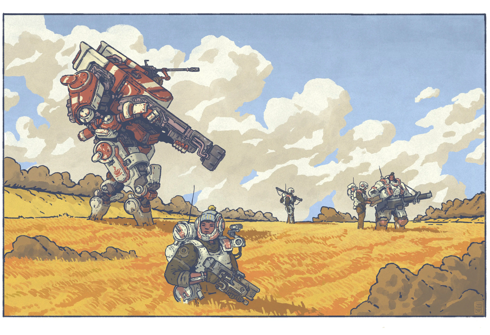

One of the only Science-Fiction TTRPGs I've played, Lancer was developed and published independently by Massif Press after a wildly successful kickstarter campaign.
The system was designed by writer and visual artist duo Miguel Lopez-Hall and Tom Bloom, and draws a lot from optimistic and early Sci-Fi, such as Star Trek for the world it takes place in.
For being the first project of an independent publisher, Lancer has an interesting development to its player support tools, specifically COMP/CON, a fully player-made site for accessing rules, content, and information on the game. Additionally, this site allows players to integrate any homebrew conditions or rules into the version stored on their cookies through text files called LCPs.
Newer official Lancer content comes with a publicly-accessible free LCP file designed by Massif Press to instantly upload the new materials into your copy of COMP/CON, making for a very constructive and alive community-developer symbiotic relationship.
Additionally, tools exist online to create one's own LCP files, and while they can be finnicky, this free access for any player offsets a large amount of the issues that a character-making encyclopedic site normally provides for new players wanting to design or use homebrew, showcasing an interesting strength of Lancer's surrounding infrastructure.
An important detail of Lancer's character creation is the way that players are encouraged to tailor their abilities to a form of combat that they find appealing, much like an engineer designing a machine. The fact that there are multiple avenues to build a character through as well means that as a player's character progresses, they can feel as though they're advancing in multiple fields at once.
Among these fields of progression are core stats which increase numbers and parameters, talents, which grant bonuses to specific types of gear, and licenses, which provide access to frames and equipment. This structure of growth, as well as the fact that any one channel within these fields can only be pursued for at most three levels pressures players to plan ahead and decide on multiple gimmicks, rather than having a single most-effective build.
In Lancer, with the wide variety of choices and the matter of building balancing party roles and options is handled primarily through a rock > paper > scissors dynamic, where disruption can punish tank-like mechs, but struggles when outright attacked, possibly even from distances where it can't retaliate, and may rely on the same durable, aggressive mechs it can abuse to deal with such enemies. There are many more specializations that aren't listed, but other examples of such a balancing act are the six distinct defenses that can be targeted, which no build can be good at more than four of at a time.
Additionally, with both a health and heat bar to keep safe, as well as a wide variety of status conditions that can disrupt certain playstyles, but may feel inconsequential to others, no build in Lancer is ever able to feel as though it has no Achilles Heel.
Lancer's balancing of specific equipment options within roles is also varied, being anything from cost to equip, heat generation from activation, use limits, to specialized weaknesses in some specific cases. It also employs a focus on opportunity cost, where the sluggish rate of progression is used to make players carefully weigh the potential order that they should prioritize making choices.